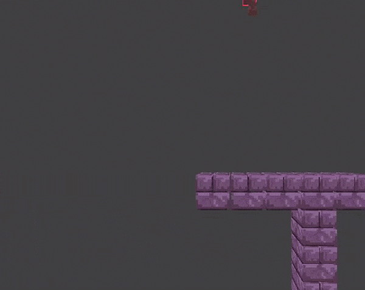

|
HEY VISITOR! This page only contains the latest post. For historical posts, click HERE! |
DUNGEON HISTORY LESSON + A SPECIAL SOMEONES BIRTHDAY...
Posted by Axol on July 24th 2023
''first logo iteration by ROG''
The Dungeon Hats You has now been in TWO whole years of active development! This calls for celebration, while we port it over to Godot's shiny new 4.1 build.
We've come a long way with Delver as a character, with multiple iterations and design choices until we came up with something unique, yet simple, it was a joint effort between ROG, Blargg, NIDO and Me, in that respective order.
''delver's design history''
No baby photos included.
No baby photos included.
From left to right is oldest to newest, from being a placeholder, to fleshing out more into a cultist-looking design, an ambiguous red hooded figure with an axe...
Few months went by and the design shifted to a more silly, light hearted approach, a funny face and an outfit that was closer to a raincoat than a cloak.
Until Blargg's iteration came up, and changed the game completely. Ever since his take on the design right after the middle one was set in stone, we've built around its perimeters ever since, morphing into the design you see today.
That's a wrap for Delver's modern design, but the old ones have had multiple instances of being drawn, or showing up in other places, which better showcases the designs active experimentation through the months.

''dungeon''
Where it all began...
Where it all began...
Very simple 2D Gamemaker test, with dummy NPCS and a static Delver, all by ROG. Delver's design began to take form around this exact point in time.

''menu 1.0''
Rockin' a torch instead of the axe.
Rockin' a torch instead of the axe.
This point in time is where the body shape began to be more expressive, and more general monster designs popped up, like in this art by ROG, most of these designs won't be in for the time being.
This served as the menu background when NIDO just started making the game, with an old song to accompany it.
''cave''
By ROG, of course.
By ROG, of course.
Fun and simple, but TDHY has quickly forgone using chiptune instruments.
''inventory 1.0''
Pondering...
Pondering...
Rough sketch of the inventory sprite mockup by ROG, nothing much to note, raincoat-era Delver design.
However, that Delver behind the UI...

''dungeon crawler''
Nido carries the project from here on out. (Micky joins way later)
Nido carries the project from here on out. (Micky joins way later)
Done in pixel art, this Delver was painstakingly sprited by NIDO only to be inevitably discarded for a goofier approach in the Post-Blarggian Delver design phase. Sorry!
This design stuck for the longest before being switched, being the standard for its time before its inevitable replacement...
''???''
We do not speak of this one.
We do not speak of this one.
...
...This was a brief Multiplayer test for a TDHY Co-op project by NIDO, it never went anywhere after the first week of its conception, sadly. 
''spinny''
Look at him go.
Look at him go.
That's enough of Delver, it's time to celebrate someone's birthday...
Happy birthday ROG!!!
The Purple Bat-like character you've seen around screenshots is his little guy!!!
ROG was responsible for this entire project coming together, MNSTRShark forming, and The Dungeon Hates You going as far as it is going right now, you've done a lot for us, and we couldn't be more grateful!
You've given us a lot to work with here, and we're just getting started with it, from the bottom of our hearts - Thank you ROG!

''delver_playing_with_forks_at_3am.png''
You'll never guess who drew this.
You'll never guess who drew this.
We seriously appreciate you reading up to this point, this is our biggest blog post to date, and will remain the biggest - for now.
As a token of our gratitude, have a little peek into what we've been cooking up so far.

Thank you for supporting TDHY!
It goes a long way.
It goes a long way.